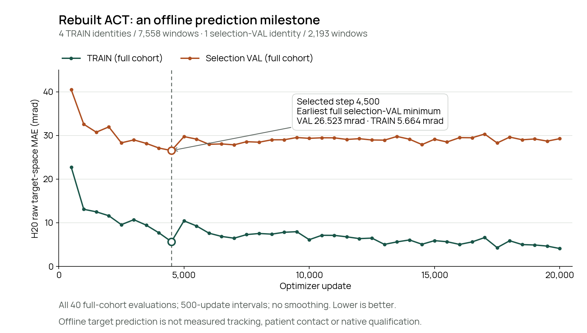

Analytic expert
8 / 8
All eight native episodes independently qualified.
Experiment notebook · November 5–6, 2026
The analytic expert completes all eight fixed scenarios. The selected state-only ACT completes none. Astra’s local-skill comparison is still pending.
Inspect the comparisonUnpublished draft · two closed arms · Astra pending
The matched comparison
Two held-out identities × two already-seen seated poses × R3/L3. Each scenario starts independently from home. This is a narrow simulation benchmark, not a continuous ten-point examination.
Closed original qualifications: expert 8/8; ACT 0/8. Astra’s eight slots remain pending. The whole comparison is incomplete.
Analytic expert
8 / 8
All eight native episodes independently qualified.
State-only ACT
0 / 8
Six posture-envelope stops; two original mesh-clearance stops.
Astra + analytic expert
Pending
Continue/abort decisions at three fixed skill boundaries.
| Scenario | Expert | ACT | Astra + expert |
|---|---|---|---|
| p001030Pose 1 · R3 | Qualified | Rejected · mesh clearance | Pending |
| p001030Pose 1 · L3 | Qualified | Rejected · posture envelope | Pending |
| p001030Pose 2 · R3 | Qualified | Rejected · posture envelope | Pending |
| p001030Pose 2 · L3 | Qualified | Rejected · mesh clearance | Pending |
| p000956Pose 1 · R3 | Qualified | Rejected · posture envelope | Pending |
| p000956Pose 1 · L3 | Qualified | Rejected · posture envelope | Pending |
| p000956Pose 2 · R3 | Qualified | Rejected · posture envelope | Pending |
| p000956Pose 2 · L3 | Qualified | Rejected · posture envelope | Pending |
Expert: 8/8 actual native episodes, all independently qualified. ACT: 8/8 actual model-invoked native episodes, all physically rejected. Astra: eight planned slots, all verdicts pending. Pending is unknown, not a physical failure.
Available closed-arm scalars: expert contact-force peaks 3.977084–4.092070 N and verified front-contact hold at least 3.0 s; ACT contact-force peaks and verified holds are 0 in all eight episodes. The selected ACT produced 412 actual CPU responses. Hold-force min/max are unreported here and remain null. Partial closed-arm evidence ↗ · Final result schema ↗
Watch the same case
The case was selected before ACT or Astra runs started: p001030 · known pose 2 · R3. The same scenario will be shown for all three systems, regardless of outcome.
Playback follows simulation time and does not show wall-clock throughput. Inference pauses are omitted from simulation-time videos; Astra call latency and episode wall time must be reported separately. Planned parallel workers are expert/ACT/Astra 3/3/1, so wall times are not a controlled speed comparison. Recording and preselection receipts ↗
A new training cohort
The replacement-runtime collection produced 18 actual positive expert episodes within 20 planned slots; two geometrically unavailable cases remain in that data denominator. Four TRAIN identities contribute 14 episodes / 7,558 H20 windows. One checkpoint-selection VAL identity contributes four episodes / 2,193 windows. Both use the same two known poses and R3/L3. These are separate from the two frozen evaluation identities.
Training completed 20,000 optimizer updates. The earliest minimum full-selection-VAL error selects step 4,500. Its H20 raw joint-target MAE is 5.66401778 mrad on TRAIN and 26.52257142 mrad on selection VAL. This is prediction of recorded expert targets, not measured robot tracking or contact accuracy.

| H20 target MAE · mrad | TRAIN | Selection VAL |
|---|---|---|
| ACT · selected step 4,500 | 5.664018 | 26.522571 |
| HOLD target baseline | 152.064061 | 150.095436 |
| Constant-velocity target baseline | 138.282261 | 136.491593 |
All 40 complete evaluations are plotted without smoothing. Full checkpoint CPU equivalence passed across all 7,558 TRAIN and 2,193 selection-VAL prediction windows. The baselines use these same cohorts and target-space metric; they are not physical controllers. The older public training cohort is not a controlled gain comparison. Offline evidence ↗
A bounded TRAIN / selection diagnosis
Two earlier TRAIN/selection smokes authenticated 2/2 but physically qualified 0/2; all 187 singleton H20 responses replayed byte for byte. The TRAIN query reached 28.545 mm from the goal, within its expert windows’ distance coverage (minimum 26.572 mm), so distance alone does not explain that failure. Its tool-axis deviation was 5.111°, versus at most 0.0235° for expert windows in the 25–35 mm distance band. Across all 7,558 TRAIN / 2,193 selection-VAL valid window origins, encoded tangential error never reached the necessary 2 mm handoff condition (minima 5.132 / 5.134 mm). These are encoded uncompressed TCP states, not an exact native trigger reconstruction; the actual gate additionally checks commanded/observed poses, full rotation, gap, speed, phase and grid. The evidence motivates genuine handoff/recovery demonstrations, not a unique causal explanation or a demonstrated repair. No frozen outcomes were used for this diagnosis and no gate was widened. Support measurements ↗ · Earlier replay diagnosis ↗.
Compare complete systems
All three systems receive a given 3D target pose from the simulation plan. The target is not localized by a trained RGB-D perception model. Different learned roles mean a final success-rate comparison would describe these complete assisted systems, not interchangeable motor policies.
| System | Inputs / decision | Motor execution |
|---|---|---|
| Analytic expert | Prescribed target and checked plans. | GivenContactExpert approach, alignment, contact, hold, release and home. |
| ACT | q7 + target-relative position3 + rotation6D + confidence1 = state17. Two-step history H2 = 34 features; confidence is exactly 1. No RGB, depth or Hall model input. | Learned L2 approach targets. Analytic L3 alignment, contact, hold, release and home; Hall is used by analytic contact. |
| Astra + expert | gpt-6-astra receives actual recorded/rendered RGB, depth summaries, simulated calibrated Hall and joints, plus the prescribed target. Continue/abort at three fixed boundaries: HOME, PARKED and RELEASED. | GivenContactExpert executes local motor and contact trajectories. Astra does not predict joint actions. |
Astra is a skill-boundary supervisor here, not a VLA trained to generate motor actions. Hall/depth modality dependence and sensor causality remain untested. A valid multimodal packet does not prove useful use of any sensor; controlled ablations are deferred. The fixed comparison is failure-aware and retains safely closed diagnostic failures without an extra all-smokes-pass gate.
Keep the inference boundary visible
Fit the expert targets.
Then measure the closed loop.
What this benchmark cannot establish
The fixed 3.5–4.5 N hold band is a simulation benchmark condition, not a force recommendation for people. Two held-out identities in two known seated poses do not establish unseen-pose or population generalization, clothing robustness, moving-patient performance, acoustic quality or clinical safety. Independent home-start R3/L3 episodes do not validate a continuous ten-point workflow.
Useful next measurements are concrete: installed tool geometry; synchronized Hall voltage, axial load and slider displacement; spring hysteresis; command/measured-joint timing; camera calibration and occlusion; surrogate-surface behavior; and separately authorized synchronized audio. A learned real RGB-D target localizer also needs independent labels and uncertainty evaluation. Hardware measurements and learning gaps ↗
Engineering notes
The replacement runtime rebuilt the cohort after the old Pod and weights were lost. STOP planning now reserves numerical margin while retaining the original endpoint and physical acceptance checks. Hall replay matched all 2,248 saved packets; its 1.497564 N spring preload at rest is distinct from a zero native contact proxy. The projected depth probe can be occluded by foreground tool geometry and is not an anatomical target estimator. Lossless XZ audit transport preserves the original recorded JSON bytes under the unchanged recording budget. These repairs make experiments recordable and interpretable; none supplies a model success verdict. Detailed engineering notebook ↗ · Bounded diagnostic extracts ↗ · Lossless transport note ↗
Trace the claims
The offline scalar extract, native smoke receipts, replay diagnosis and matched recording receipt bind original small summaries by bytes and SHA256. The curve is reproducible from its scalar extract. No raw body assets, training arrays, credentials or weights are bundled.
Actual simulator reproduction also needs the separately provisioned runtime and permitted assets, with fresh local qualification. The historical expert 8/8 and ACT 0/2 keep their original cohorts and media. This new cohort does not replace those historical results. The new comparison retains eight scenarios per system, including failures, unavailable cases and missing audits.
From prediction to execution